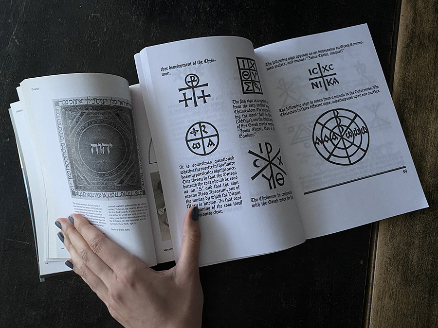

Studio for graphic design, visual art and research into letters and forms.
This research started as a graduation book proposal in 2017 at Royal College of Art, Critical Writing in Art & Design.
‘Letterforms & Magic’ project is set to present original research material to map out the breadth of interest in letterforms in Western magical culture. A graphic designer, whose daily job consists of studying and designing letterforms and signs for different cultural contexts, can find a well of inspiration in studying magical artwork. Flicking through a book on graphic design or typography can often feel much like skimming through a book on magic. They are both likely to contain a diverse set of visual patterns, complex image constructions, symbols from different cultures and words in multiple languages. This study emerged from a personal bookshelf that encompasses books on alchemy, typography, strange phenomena, psychoanalysis and graphic design. With such a diverse set of books to hand, I found it curious that, when opened to a random page and juxtaposed to one another, the books bare similar kinds of interests.
Through my research, I’ve noticed a trend of typographers straying from their design practice proper to explore the cultural evolution of a letterform, and that these practitioners often had a general research interest in symbols. For instance, in 1928 Adrian Frutiger, a prominent Swiss typographer and a designer celebrated for fonts such as Univers and Avenir, published Signs and Symbols, a book on ‘Their Design and Meaning’. In his ambitious book, Frutiger categorises development and formal evolution of different symbols around the world, including the evolution of alphabets. In The Book of Signs, another prominent typographer, German Rudolf Koch writes about different signs and their symbolic meaning in Freemasonry, Alchemy, Astrology, Religion, Botany, amongst other disciplines. When a two-page spread from Signs and Symbols and The Book of Signs is juxtaposed with a spread from Alchemy & Mysticism by Alexander Roob, a common interest in graphic systems is exposed.
The term ‘magic’ in my research is applied to a broad range of writing that are often interchangeably described as mystical, esoteric, religious, spiritual, magical, supernatural, or occult. The word ‘magic’ is specifically selected here because it is the word which holds greatest resonance with the popular culture. Indeed, visual examples that are selected have not been brought out of esoteric obscurity, but, on the contrary, plucked from a range of content that has been circulated in Facebook groups, showcased in contemporary exhibitions, republished in recent editions or found through Google searches and anonymous fan pages.
From the volume of contemporary interest, one can deduce that magic still lives among us: whether as a hobby, as an intellectual interest, or as a powerful belief aligning one to a particular cause. For this latter quality, magic is both serious and dangerous. Magic possesses both the light and dark shades of feelings, and a belief in magic can stimulate an irrational pursuit to the point of fanaticism. It is important to be aware of visual communication around us, to recognize the kind of beliefs that are embedded in magical art and the mundane.
Background img: The creation of the starry firmament. Woodcut from Genesis by Paul Nash, from Wellcome Archives.
News
Clients
Contact
Letterforms & Magic studio is ran by graphic designer Tihana Šare.
Open for commissions at tihana@letterformagic.com
Based in Zagreb & London.